модуль 1. основы html
Научись создавать структуру своих первых веб-страниц
и разбираться, как элементы расположены в документе.
HTML — это фундамент, на котором строится ваш сайт!
Научись создавать структуру своих первых веб-страниц
и разбираться, как элементы расположены в документе.
HTML — это фундамент, на котором строится ваш сайт!
И первый же вопрос - где мы будем писать код? На этом основывается наш первый раздел.
Знакомься - это Visual Studio Code. Именно здесь мы будем создавать все проекты.
Visual Studio Code - это мощная и бесплатная программа, которая помогает программистам писать и редактировать код. Представь, что это как текстовый редактор, но с суперсилами! Он поддерживает множество языков программирования, таких как нужные нам HTML, CSS, JavaScript и многих других.
Скачать приложение можно по этой ссылке.
При запуске нас встречает главный экран, на котором расположено всё самое нужное для работы:
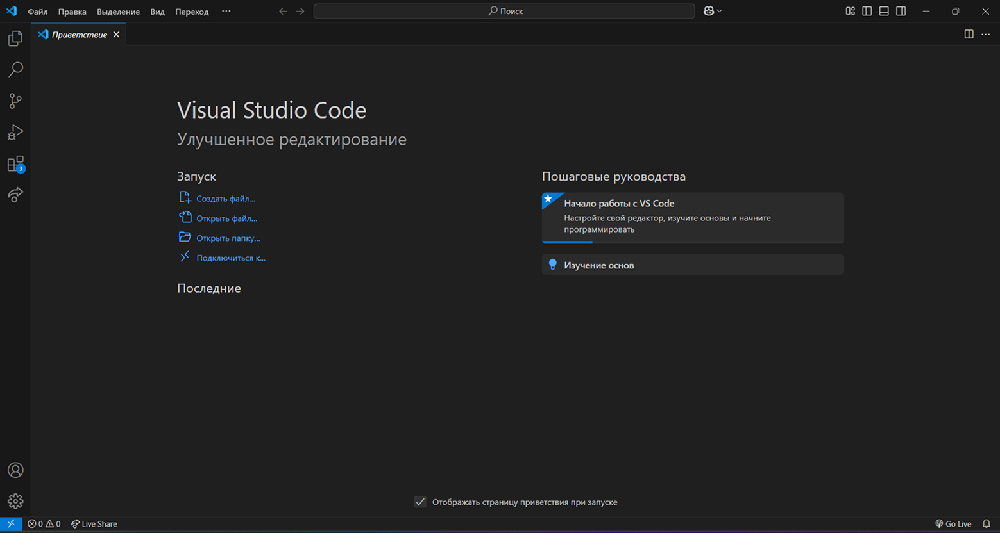Самое классное в VS Code — это его интерфейс. Он чистый и интуитивно понятный, поэтому ты можешь сосредоточиться на коде, не отвлекаясь на лишние вещи. Ты можешь открыть несколько файлов одновременно и быстро переключаться между ними, а также настраивать свою среду разработки так, как удобно именно тебе.
Теперь пройдемся по расширениям. Первым делом важно сказать, что VS Code не сразу будет на русском языке. Ты можешь сменить язык приложения на любой нужный тебе во вкладке “расширения”.
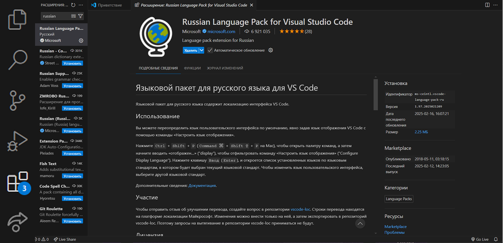Вкладка с расширениями находится на левой боковой панели. После этого тебе остается только ввести в поиске нужное тебе расширение и установить его.
Если интересно, делюсь несколькими расширениями, которые могут быть полезными для тебя.
Это расширение позволяет запускать локальный сервер на твоем компьютере, чтобы ты мог видеть изменения в своём коде в реальном времени.
Получается, каждый раз, когда ты что-то редактируешь в HTML или CSS, страницу не нужно обновлять вручную — Live Server сделает это за тебя. Просто сохрани файл, и изменения сразу отобразятся в браузере!
Это расширение, которое может помочь создавать фальшивые тексты (например, для тестирования макетов).
Когда ты создаешь свой сайт, нужно заполнить его текстами. FishText сгенерирует случайные, но правдоподобные тексты, чтобы ты мог сосредоточиться на дизайне, а не на написании контента.
Это расширение позволяет работать над проектом одновременно с друзьями. Это как совместная работа в реальном времени!
Ты можешь делиться своим кодом с кем-то, кто находится в другом месте — они увидят то, что ты делаешь, и смогут помогать или даже писать код вместе с тобой. Это просто супер для учебы или командной работы над проектом!
Ну всё, теперь можно настроить VS Code под себя!
HTML (HyperText Markup Language) — это язык разметки, который используется для создания веб-страниц. Представь, что HTML — это основа, на которой строится твой сайт. Он задает структуру и содержание страницы, определяя, какие элементы будут на ней, как они будут выглядеть и как пользователи смогут с ними взаимодействовать.
Если ты когда-либо заходил на сайт и видел текст, изображения или ссылки, знай, что все это было создано с помощью HTML. Он помогает браузерам понять, как отображать информацию, чтобы пользователи могли легко читать и использовать онлайн-контент.
Теперь давай разберемся с самыми важными тегами HTML, которые помогут тебе начать вёрстку:
Этот тег используется для написания текста, который будет разделен на абзацы.
Пример: <p>Это мой первый абзац.</p>
Теги заголовков используются для создания заголовков разного уровня. <h1> это самый большой заголовок (главный), а <h6> — самый маленький.
Пример: <h1>Главный заголовок.</h1>
Этот тег используется для создания пунктов в нумерованных и маркированных списках.
С помощью этого тега ты можешь вставлять изображения на свою страницу. src указывает URL изображения, а alt — текст, который будет отображён, если изображение не загрузится.
Этот тег позволяет добавлять гипертекстовые ссылки на другие страницы или ресурсы. href указывает, куда должна вести ссылка.
Тег <strong> выделяет текст жирным шрифтом, а <em> — курсивом.
Используется для объединения других элементов и создания структуры на странице.
Теперь ты можешь попробовать создать свой первый сайт. Как это сделать? повторяй за мной.
Это можно сделать в VS Code на приветственном экране или на боковой панели слева.
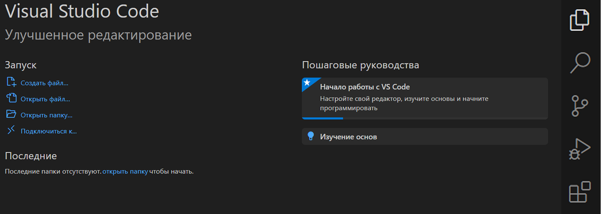Создай папку и дай ей любое название, например MySite.
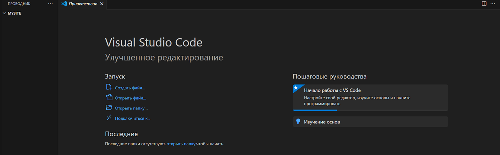Открываем только что созданную папку и создаём файл. Зажмись на правую кнопку мыши внутри папки, выбери "New File" и назови его index.html. Это будет твоя главная страница. Убедись, что заканчивается на .html, потому что без этого браузер не поймет, что это сайт!
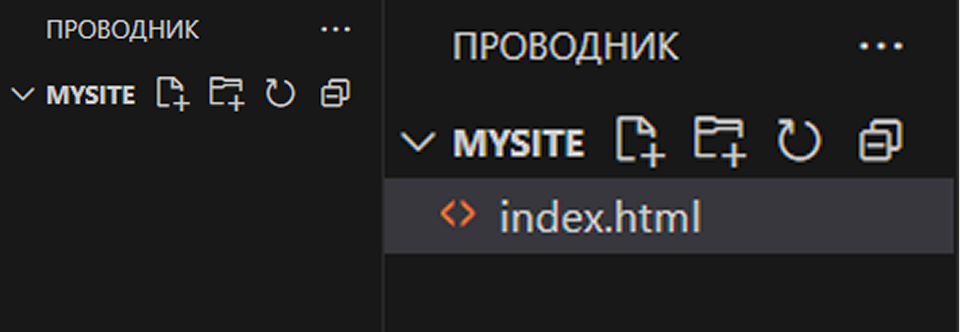Для того чтобы сайт работал правильно, нужно прописать всё самое главное:
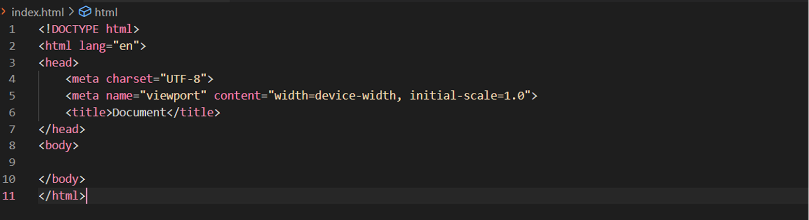Сложно? Ладно, просто поставьте “!”, нажмите tab или enter и помощник Emmet напишет всё за вас.
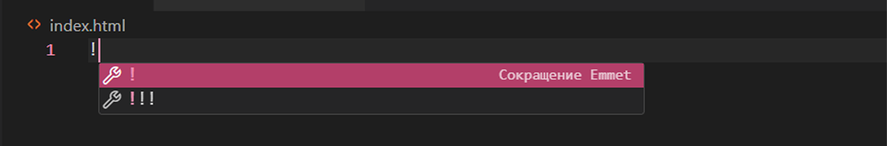Далее нам нужно выбрать язык, на котором будет создан наш сайт в строке lang и ввести его название в строке title.
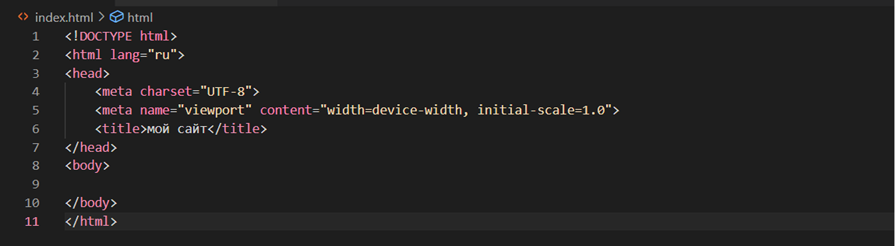 Отлично! Ты можешь наполнить свой сайт тем, что хочешь. Писать можно внутри тега <body>.Что-то не получается? Держи код:
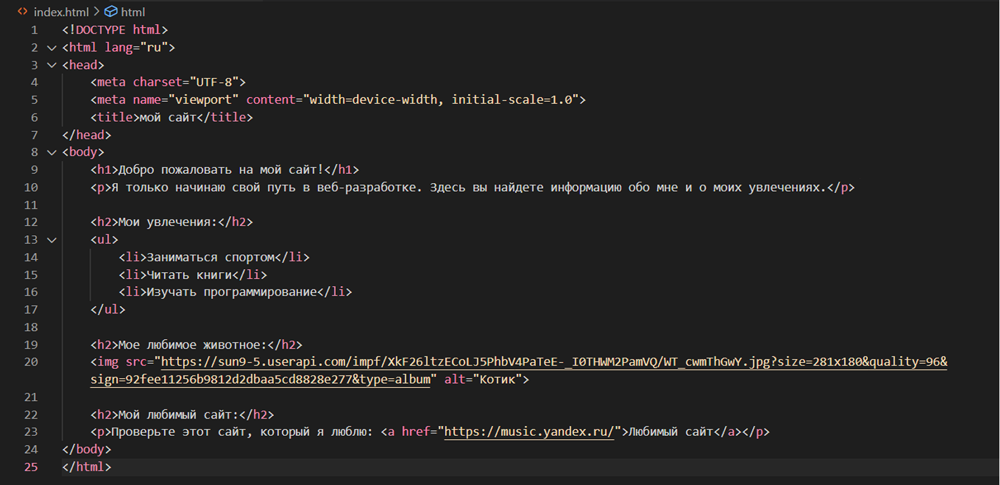Кстати, картинки можно вставлять не только ссылкой, но и добавлять с компьютера. Для этого в папке своего проекта создай ещё одну папку и дай ей любое название, например img. Теперь в эту папку добавь нужную тебе картинку.
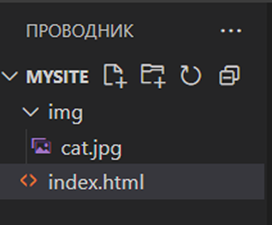Дальше нужно указать ссылку на нашу папку с картинками. Сделать это можно так:
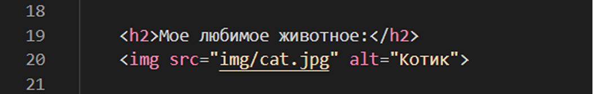Давай посмотрим на результат:
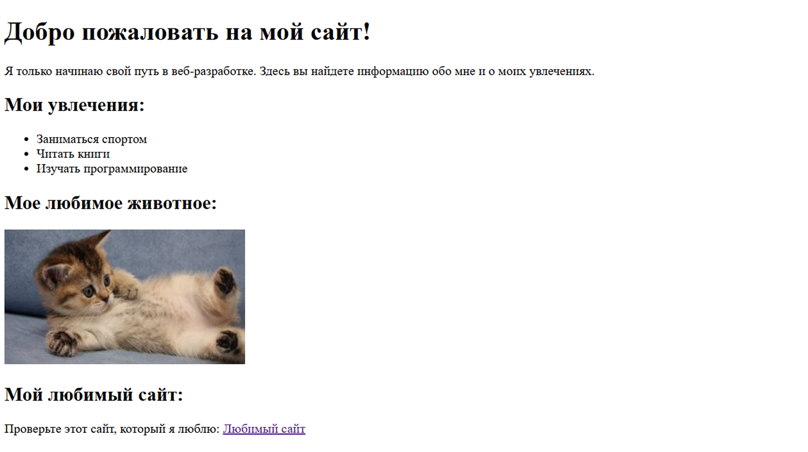Теперь, когда ты уже знаешь основы HTML, давай разберем важные элементы веб-страницы — это header, main и footer. Эти теги помогают организовать содержимое и создают понятную структуру.
Тег <header> используется для обозначения верхней части страницы, где обычно располагается название сайта, логотип и навигационное меню. Это своего рода "лицо" твоего сайта, которое первое видит пользователь.
Тег <main> используется для обозначения основной части страницы, где располагается контент, связанный с темой страницы. Это может быть текст, изображения, списки и любые другие элементы, которые являются ядром твоего контента.
Тег <footer> используется для обозначения нижней части страницы, где часто располагается информация о авторских правах, ссылки на политику конфиденциальности, контактные данные и другие дополнительные сведения.
Теперь давай дополним наш сайт новыми элементами. Может внешне ничего не изменится, но твой код будет в разы понятнее.
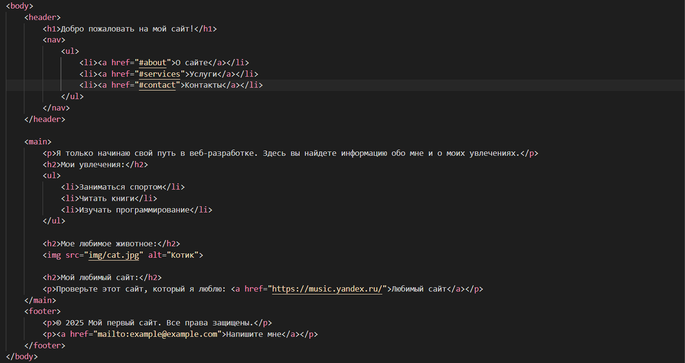Проверь, получилось ли у тебя:
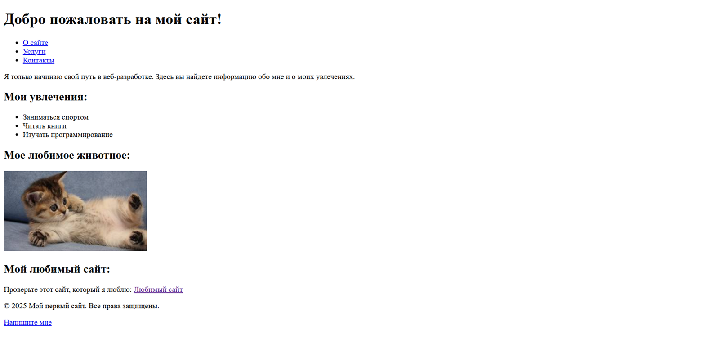На самом деле возможностей HTML гораздо больше, чем мы изучили, но эти теги одни из самых важных в твоих проектах.
Если хочешь узнать чуть больше об HTML, то переходи по этой ссылке к учебнику. Здесь есть много полезной информации.